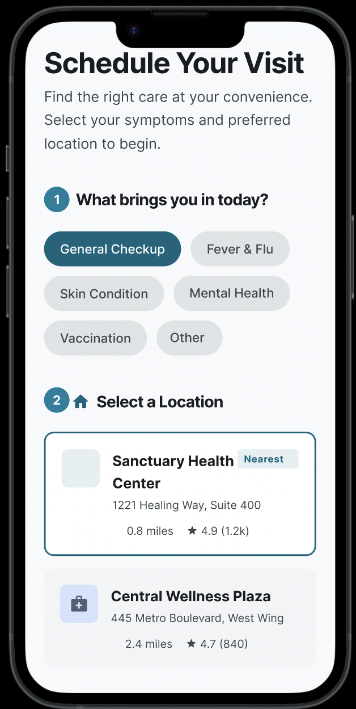
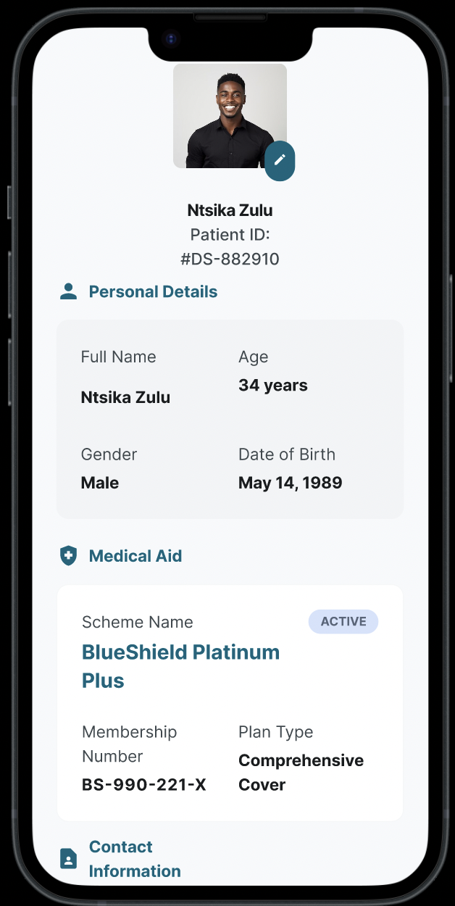
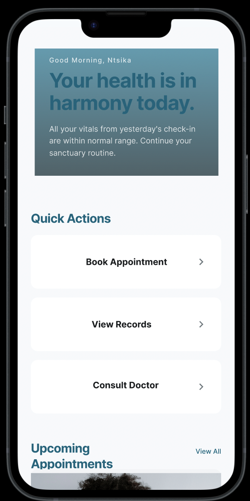
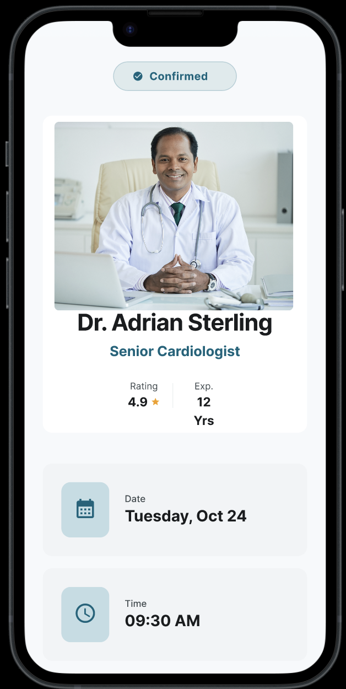

Hero overview image or all screens go here
src="images/medigo-overview.png"
A mobile healthcare app designed to end the culture of 4am hospital queues by giving patients the tools to book, view, and manage their appointments entirely on their own terms.
In South Africa, queuing at public and private healthcare facilities from as early as 4am just to secure a same-day appointment is a widespread, documented reality. Patients lose entire working days, caregivers cannot leave their dependants, and the most vulnerable people are the ones most affected.
This is not a staffing problem. It is a systems design problem. People are not being given the tools to claim a time that belongs to them before they even leave home.
Patients across South Africa are forced to queue from 4am at healthcare facilities simply to book or attend an appointment, causing unnecessary suffering, lost income, and systemic inequity.
Design a mobile app that lets any patient book, manage, and attend healthcare appointments digitally so that showing up at the right time replaces waiting for the right moment.
User interviews and social listening on TikTok and Twitter surfaced a consistent, urgent frustration with the current appointment system. Two personas emerged from this research that represent the majority of affected users.
"I have to be at the clinic by 4am or I will not be seen. My employer does not understand why I need a full day off just to see a doctor for 10 minutes."
Nomsa is a full-time caregiver who relies on public healthcare. She has a smartphone but limited data. She cannot afford to lose a day of work, and she cannot bring her two young children to sit in a queue from before sunrise.
"I saw people on TikTok talking about sleeping outside the hospital with blankets. I thought they were exaggerating. Then I needed an appointment myself."
Themba uses a private clinic but still faces long waits and no clear way to know how long his actual wait will be once he arrives. He wants transparency, confirmation, and the ability to reschedule without calling during business hours.
The home screen surfaces the most time-sensitive information immediately. Upcoming appointments, prescription reminders, and recent lab results are all visible without any navigation.
The dashboard is the first screen a user sees after logging in. It pulls the three most critical pieces of information forward: upcoming visits, recent prescriptions, and pending lab results.
The Schedule screen gives patients a clear, chronological view of their upcoming and past visits. Each appointment card shows the doctor, the time, the location, and quick actions to reschedule or set a reminder.
Past reminders are surfaced here too, ensuring patients never miss a follow-up prescription or vaccination that was recommended at a prior visit.


The user profile screen stores all personal and contact information, emergency contacts, medical aid details, and preferred healthcare facilities.
This screen was designed to reduce the amount of paperwork patients are asked to fill in at reception on arrival. Facilities integrated with Medi-go can pull this information directly, making check-in faster and less stressful for both staff and patients.
The booking flow walks patients through selecting a facility, choosing a doctor, picking a date, and confirming an available time slot. The entire process takes under 90 seconds on a first-time use.


The home screen was designed around the concept of calm confidence. A patient who opens Medi-go should immediately feel like everything is in order. Upcoming appointments are prominent, quick actions are one tap away, and recent prescriptions are always visible.
The doctor profile card in the upcoming appointments section reinforces trust by showing who the patient will see, when, and where no uncertainty, no surprises.
3 participants representing both user personas completed a moderated usability test using a high-fidelity Figma prototype. Each participant was given four tasks to complete without any assistance.
The reschedule flow had the only friction point. Participants expected to reschedule directly from the appointment card rather than navigating to the details screen first. This feedback led to adding a Reschedule button directly on the appointment card in the final design.
Medi-go removes the single biggest source of healthcare inequity that patients described in research: not knowing when they will be seen. A confirmed appointment time means patients can arrive at the right time, not the earliest possible time.
The app also reduces administrative load on reception staff, decreases no-show rates through reminders, and gives facilities cleaner scheduling data.
The current design assumes patients have reliable data connectivity. A future version should include an offline mode that caches appointment details and allows confirmation to sync when connectivity returns.
I would also co-design the facility-side admin interface with actual reception staff, not just model it from the patient side. The queue problem is two-sided and both sides need a tool that works for them.